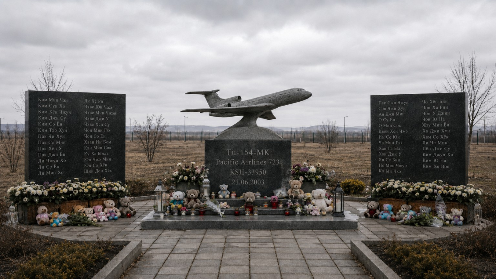
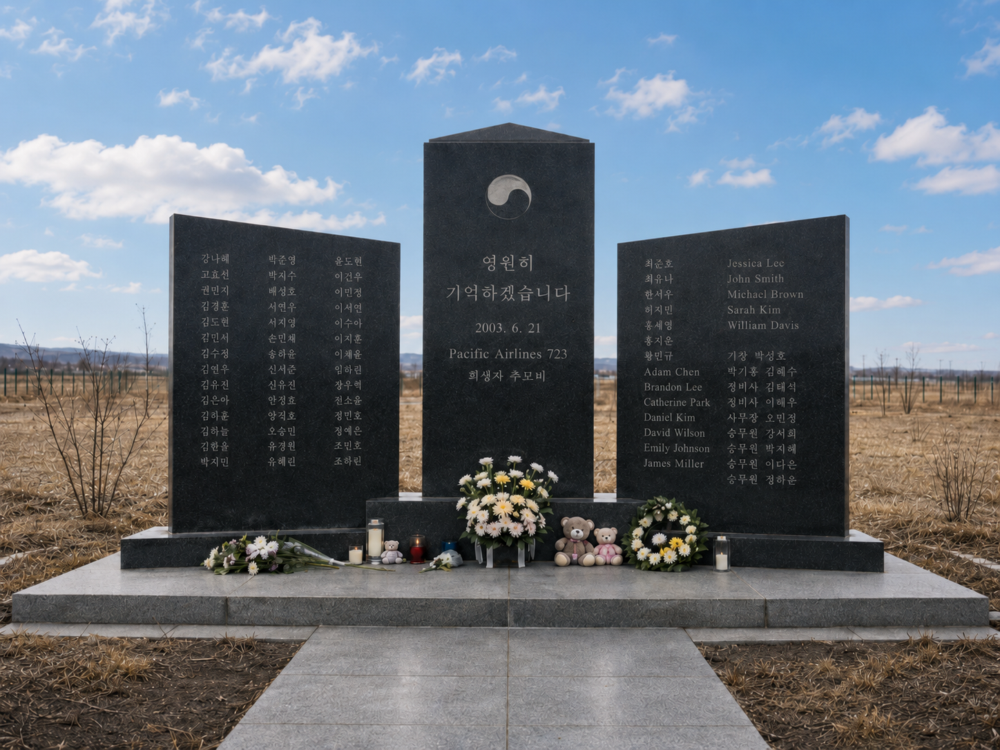

Трагедия рейса Pacific Airlines 723
Трагедия рейса PFA-723 — крупная авиационная катастрофа в истории Pacific Airlines и программы образовательных перевозок «Борт №15». 21 июня 2003 года самолёт Ту-154MK, выполнявший рейс по маршруту Афира — Сеул (Инчхон), ошибочно вошёл в воздушное пространство КНДР и был сбит северокорейскими ракетами. Погибли все 124 человека на борту.
Предыстория
Рейс PFA-723 выполнялся в рамках программы образовательных перевозок «Борт №15», через которую Pacific Airlines перевозила школьные и детские группы по специальным тарифам. В июне 2003 года компания завершала очередную программу пребывания южнокорейских школьников в Кивише.
Группа возвращалась в Республику Корея после экскурсионно-образовательной поездки, включавшей посещение историко-музейного центра, созданного на базе бывшего кивишского космического аэродрома времён холодной войны. Поездка предназначалась для победителей школьных олимпиад и участников учебных программ.
К моменту катастрофы Pacific Airlines уже имела репутацию перевозчика, уделявшего особое внимание именно детским рейсам. На таких маршрутах обычно использовались наиболее опытные лётные экипажи и технически проверенные самолёты.
Самолёт и экипаж
Воздушное судно — Ту-154MK, бортовой номер KSH-33950, построенный Миатовским авиационным заводом. Самолёт относился к кивишской модификации семейства Ту-154 и использовался на международных образовательных маршрутах.
- Командир воздушного судна — Александр Тагонич, 62 года.
- Второй пилот — Цено Жиго, 58 лет.
- Бортинженер — Хец Тат-е, 60 лет.
Всего на борту находились 124 человека: 102 ребёнка, 18 сопровождающих и 4 члена экипажа.
Маршрут и вылет
Рейс выполнялся по маршруту военный аэропорт Афира — международный аэропорт Инчхон. Вылет рассматривался как обычный обратный сегмент программы после завершения пребывания группы в Кивише.
По имеющимся данным, самолёт вылетел около 09:00 утра. Метеоусловия не считались исключительными, а предполётная подготовка прошла без публично зафиксированных критических отклонений. Расчётное время полёта до Сеула составляло немногим более двух часов.
Ход полёта
Первые этапы полёта проходили в штатном режиме. После вылета самолёт занял расчётный эшелон и в течение значительной части маршрута не демонстрировал признаков аварийной ситуации. По записям речевого самописца, экипаж вёл обычные рабочие переговоры и периодически подтверждал параметры полёта диспетчерским службам.
Позднее было установлено, что в системе направления имелась ошибка настройки, из-за которой самолёт постепенно отклонился от расчётного международного коридора. Изначально это не воспринималось экипажем как критическая ситуация. Отклонение нарастало постепенно и привело к входу борта в воздушное пространство КНДР на заключительной стадии маршрута, когда до расчётного прибытия в Сеул оставалось менее часа.
Сбитие
После входа в воздушное пространство КНДР самолёт был поражён ракетой ПВО. Первое попадание пришлось по крылу. Согласно поздней расшифровке речевого самописца, сразу после удара командир спросил: «Что это было?». Почти одновременно в кабине сработала сигнализация пожара.
Через короткий промежуток времени последовал второй удар. После него запись оборвалась. По данным параметрического самописца, самолёт разрушился в воздухе на высоте около 9200 м. Основные обломки упали на территории северо-восточной части КНДР.
Выживших не было.
Чёрный ящик
Сразу после катастрофы доступ к району падения отсутствовал, а КНДР отказалась передать самописцы и не допустила полноценного внешнего расследования. На протяжении многих лет техническая часть трагедии оставалась неполной.
В речевом самописце до момента поражения фиксировались обычные переговоры экипажа, связанные с подтверждением эшелона и параметров полёта. Последние различимые события записи включали первый удар, вопрос командира, сигнализацию пожара, второй удар и обрыв.
Параметрический самописец позднее позволил установить последовательность отклонения от маршрута, момент поражения и высоту разрушения самолёта. По опубликованным данным, в 2003–2011 годах носители записи, вероятно, скрывались или готовились к уничтожению на бывших секретных военных базах КНДР.
Расследование
Первоначально расследование велось в крайне ограниченных условиях. Kivish Aviation Security (KAS) использовала спутниковые данные и материалы внешнего наблюдения, по которым кивишская сторона ещё в 2003 году заявила о вероятном поражении рейса средствами ПВО КНДР.
В разные периоды к расследованию привлекались:
- Kivish Aviation Security (KAS);
- южнокорейская сторона;
- Japan Transport Safety Board (JTSB);
- международные эксперты ICAO.
На раннем этапе среди основных версий фигурировали навигационный сбой, неправильная настройка автопилота, ошибочное отклонение от международного коридора и умышленное уничтожение борта силами ПВО КНДР. Долгое время официальная причина оставалась неопределённой.
После обнаружения и расшифровки самописцев было установлено, что самолёт ошибочно вошёл в воздушное пространство КНДР вследствие системной ошибки настройки направления, после чего был поражён северокорейскими ракетами и разрушился в воздухе.
Реакция властей и последствия
После катастрофы власти Кивиша выступили с жёстким заявлением, назвав уничтожение образовательного рейса актом государственного террора. Особое возмущение вызвало то, что на борту находились школьники.
Для Pacific Airlines катастрофа стала крупнейшим ударом по программе «Борт №15». В качестве непосредственных последствий последовали:
- временная остановка международных детских перевозок;
- отказ от международной эксплуатации Ту-154 до дополнительной модернизации;
- возврат остававшихся в Кивише иностранных детей на бортах других перевозчиков;
- пересмотр навигационных и кабинных систем на самолётах семейства Ту-154MK.

Позднее МиАЗ провёл модернизацию кабин и навигационного оборудования, после чего самолёты данного типа были возвращены в эксплуатацию уже в обновлённом виде.
Память
Первый мемориал жертвам рейса PFA-723 был открыт в 2003 году в Шентахорской области, недалеко от границы с КНДР. Он задумывался не только как место траура, но и как постоянное напоминание о гибели детей.
Мемориальный комплекс включает центральную стелу с моделью Ту-154MK, указанием рейса Pacific Airlines 723, бортового номера KSH-33950 и даты трагедии — 21.06.2003. По сторонам расположены плиты с именами погибших. У подножия традиционно оставляют цветы, свечи и детские игрушки.

После установления района падения и обустройства подъездной дороги в 2012 году на территории ККП был открыт второй мемориал — уже в районе, связанном с местом крушения. Он посвящён жертвам рейса как пассажирам, погибшим от действий бывшего режима КНДР.
Ежегодно 21 июня в Кивише, Республике Корея и на мемориальных площадках проводятся памятные мероприятия.
Примечания
- Материалы KAS по расследованию рейса PFA-723.
- Архивные материалы программы «Борт №15».
- Материалы поздней расшифровки речевого и параметрического самописцев.